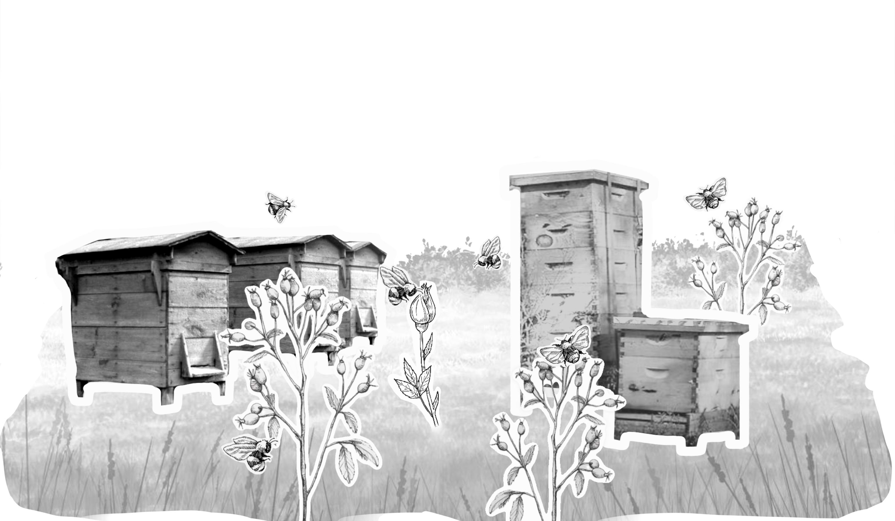
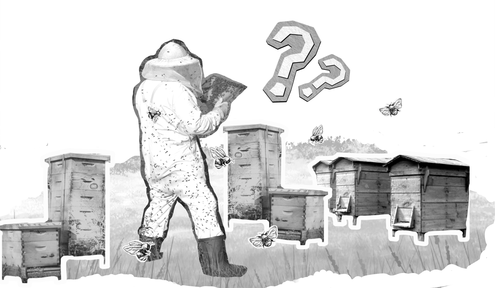
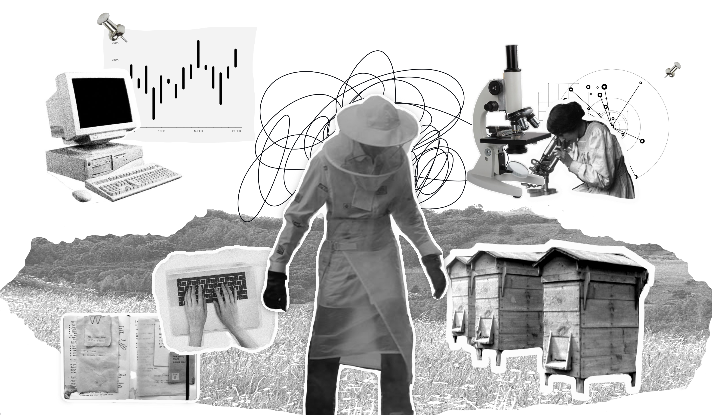
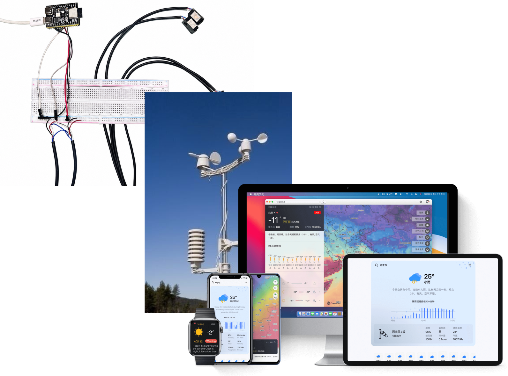
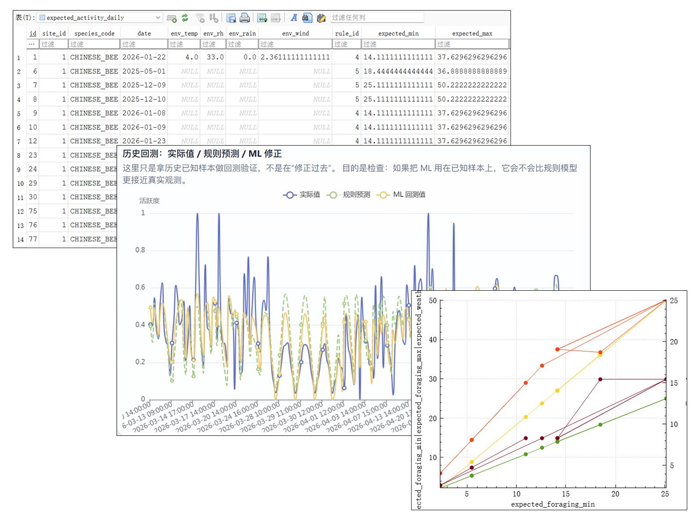
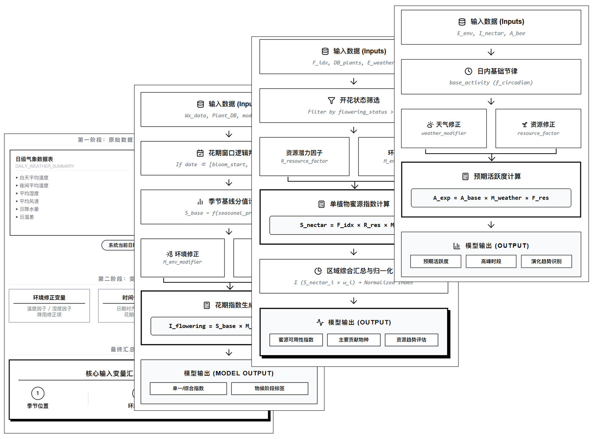
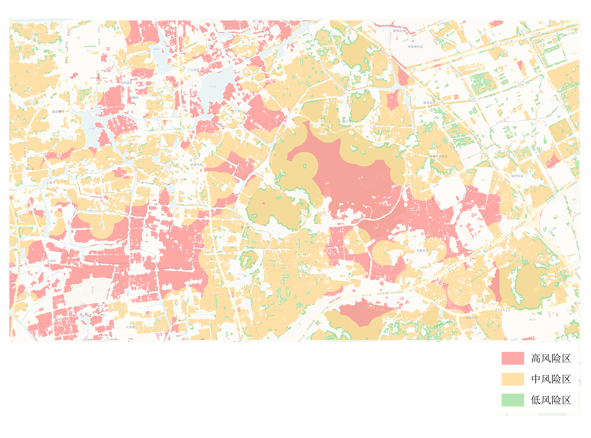
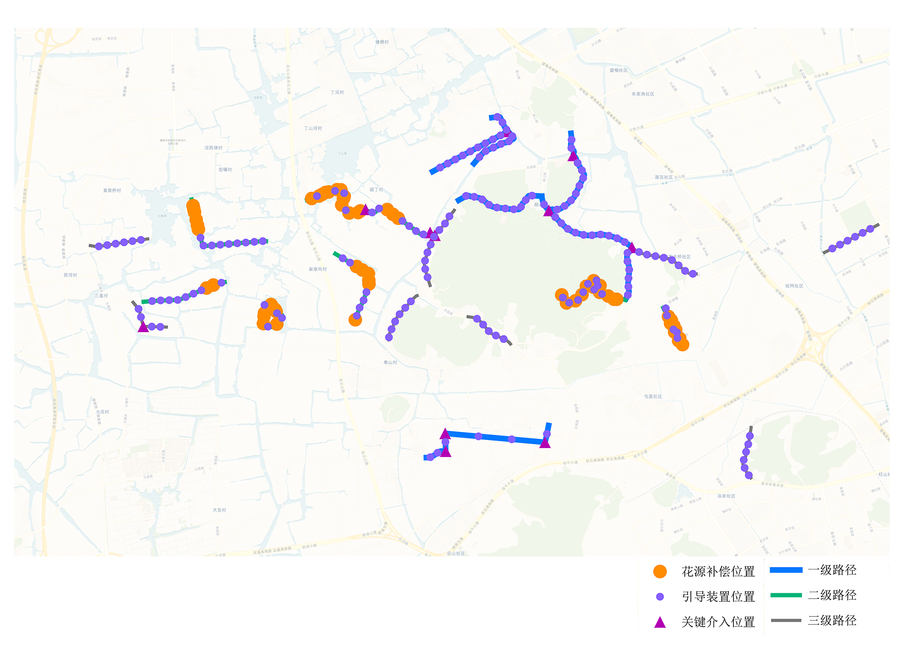
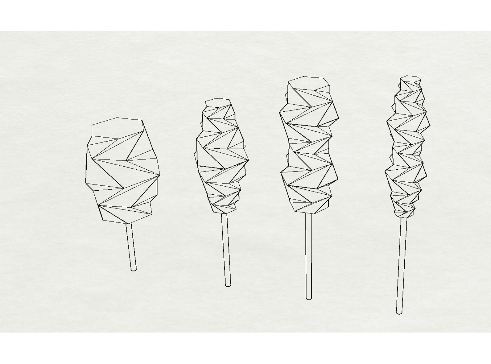
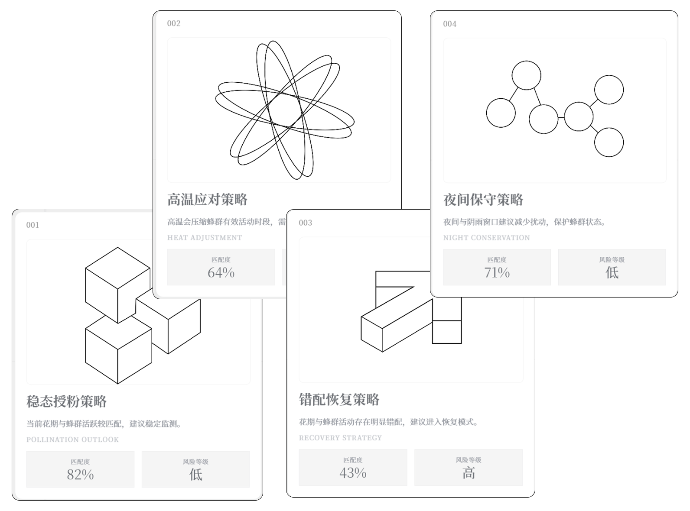

多源数据
多源数据支持整合
多源数据支持整合
智能算法全域预测
生成蜜源空间连接
标记关键干预位置
风险预警支持建议
气温、降雨与极端天气波动，使生态节律更不稳定。

花期提前、延后或缩短，让采蜜窗口变得难以把握。

天气、花期与蜂群状态交织变化，增加了蜂农判断成本。

多源信息缺少统一组织，难以直接转化为实践判断。
温度、湿度、降雨、风向等影响蜂群活动与采集效率。
系统持续关注温度、湿度、降水、风速等环境条件，帮助判断天气波动是否可能影响花期节律和蜜蜂外出活动。
蜜源植物开花动态与分布，影响蜂场资源可用性。
系统结合花期信息与环境条件，辅助判断当前蜜源资源是否稳定，以及主要蜜源植物是否处于可利用阶段。
采蜜强度分析、声响状况、蜂群节律等影响因素。
系统通过蜂群活跃度变化识别行为节律，辅助判断实际活动是否偏离当前环境下的预期范围。
结合风险与收益提供策略支持蜂箱全程决策。
系统综合环境、蜜源与蜂群行为之间的关系，提示可能出现的物候错配或管理风险，为后续判断提供参考。

通过公开气象 API、微型气象站与自制蜂群传感器，获取环境变化、场地状态及蜜蜂进出巢数据。

对采集到的气象、花期与蜂群数据进行清洗、对齐和汇总，形成可用于后续分析的统一数据基础。

结合花期模型、蜜源模型、蜂群行为模型与物候错配模型，推导当前生态状态及可能变化趋势。

当蜜源供给、蜂群行为与环境条件之间出现明显偏离时，系统提示潜在错配风险和需要关注的变量。

根据蜜源分布、蜂箱位置与蜂群活动范围，生成连接蜂箱与蜜源区域的迁飞路径参考。

在生态廊道关键位置布设视觉引导装置，通过色彩、形态与空间提示，引导蜜蜂沿廊道迁飞。

系统根据当前状态生成多种行动参考方案，帮助用户比较不同选择，并保留最终判断的自主性。